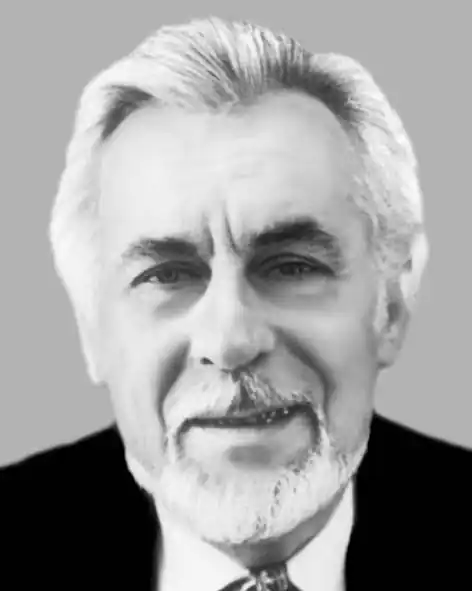
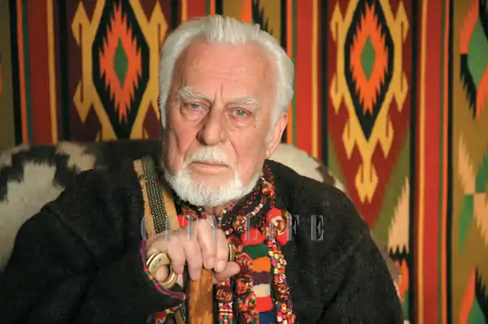

(1929 р. нар.)
Роман Іваничук — автор багатьох збірок новел та оповідань, повістей "Місто", "Сьоме небо", "На перевалі", "Зупинись, подорожній!" ("Спрага"). Але найбільшу популярність він здобув як історичний романіст. Його "Мальви", "Черлене вино", "Манускрипт з вулиці Руської", "Вода з каменю", "Четвертий вимір", "Шрами на скалі", "Журавлиний крик", "Бо війна війною", "Орда" — це різні часи, різні географічні терени, різні жанрові підвиди історичного роману.
Як літератор Іваничук виховувався в атмосфері новелістичної школи Стефаника, яким захоплювався батько письменника, сільський учитель і перший його літературний наставник. Та й народився Р. Іваничук недалеко від Стефаникового села, теж на Покутті, — у с. Трач, що на Коломийщині, і вчився у тій самій Коломийській гімназії (цей період, як і саму гімназію, він згодом із любов'ю опише в автобіографічному творі "Благослови, душе моя, господа...", 1993). Уже перший опублікований твір Р. Іваничука — новелу "Скиба землі", видрукувану 1954р. в студентському альманасі Львівського університету, де він навчався на філологічному факультеті, схвально зустріла критика. Великий успіх випав на долю його першої збірки малої прози "Прут несе кригу" (1958). Сюжети перших творів Р. Іваничука не є власне новелістичними, "новина" тут пов'язана не з екстраординарними ситуаціями чи драматичними моментами в житті героїв; це найчастіше "новина" настрою героя-оповідача. Самовимогливість, самокритичність і невтомну працьовитість, властиві Іваничукові, добре ілюструє його перший роман "Край битого шляху" (1962). Кожна з наступних частин цієї трилогії (опублікована "Прапором" повість "Зупинись, подорожній!" — у першому журнальному варіанті "Спрага" — мала б бути четвертою частиною, а роман — тетралогією) вирізнялась зростанням майстерності, професіоналізму, хоча загалом твір не став значним явищем літератури. Виразно окреслені генетичні зв'язки новели з повістями письменника "Місто" (1977), "Сьоме небо" (1985), "На перевалі" (1981). В усіх трьох діють ті ж самі герої, хіба на різних — головніших чи другорядніших — ролях. У "Місті" кінорежисер Нестор на вершині слави приїжджає в місто своєї юності за її підтвердженням або запереченням: привозить на суд земляків свій новий фільм. У повісті "На перевалі" той самий Нестор із групою акторів потрапляє у незвичайну ситуацію, яка висвічує кожного з них. У "Сьомому небі" головними героями виступають другорядні персонажі "Міста": Несторів гімназійний учитель на прізвисько Страус, щоб скоротати тюремний час у фашистській в'язниці й подолати страх, розповідає співкамерникам про себе та своїх друзів. Усі три повісті — як три аспекти проблеми випробування, розділи більшого твору, до якого вони рухаються своєю проблематикою, сюжетними лініями, життєвим матеріалом і долями героїв. Зрештою, те саме спостерігатиметься і в історичних романах: кожен, лишаючись суверенним, завершеним твором, водночас сприймається як частина епопеї, за якою — вся історія нашого народу. У жанрі історичного роману Р. Іваничук дебютував 1968р. "Мальвами". Ще не встигли з'явитися рецензії, як усна й письмова "партійна" критика за спецзавданням "згори" проголосила "Мальви" ідеологічно шкідливим "історичним романом без історії". Оргвисновки, безумовно, вдарили не тільки по твору. Що ж крамольного знайшли в "Мальвах" ідеологічні чини? Крамольним на той час було вже саме звернення до національної історії, утвердження ідеї любові до рідної землі і народу як виміру соціальної та моральної вартості людини. Роман (першоназва "Яничари" знята автором з "маскувальною" метою) влучно бив у те явище, яке значно пізніше було назване "манкуртством". Дія в романі "Мальви" відбувається у середині XVII ст. — напередодні та під час національно-визвольної війни під проводом Богдана Хмельницького. Це історія життя полонянки з України Марії, її поневіряння на чужині з дочкою Соломією, яку вона вже тут, у Криму, назвала Мальвою, сподіваючись, що виживе дочка, як вижили занесені вітрами з українських степів квіти. А Україна протистоїть двом державам-загарбницям: Османській імперії та Кримському ханству, що воюють проти України силами її дітей. Роман "Черлене вино" (1977) переносить читача у XV ст., в галицькі й волинські землі, над якими нависла загроза полонізації. Циклічність, зчепленість кожного роману з наступним надає їм безперервності вічного часу, куди входять і видатні події, і маловідомі; і видатні люди, і невідомі офіційній історії їхні однодумці, без кого й великі не стали б великими. Тому письменник намагається реставрувати ці невідомі постаті — встановити справедливість, "вирівняти" історію. Тенденція до демократизації останньої, властива сучасному історичному романові, проймає концепцію часу в творах Р. Іваничука. Тому він вибирає з потоку народної історії не так саму видатну подію, як її соціально-психологічні передумови. У романі "Манускрипт з вулиці Руської" (1979) показано зародження ідеї визвольної війни, майбутньої Хмельниччини, у Львові кінця XVI — початку XVIII ст. А в романі "Вода з каменю" (1982) зображено будителів національної пам'яті — "Руську трійцю" — Маркіяна Шашкевича, Івана Вагилевича, Якова Головацького, що в 30-х роках XIX ст. уперше в Західній Україні стали писати літературні твори народною мовою. "Четвертий вимір" (1984) — це філософське осмислення категорії пам'яті (четвертого виміру дійсності) через долю Шевченкового однодумця і друга М. Гулака, одного з кириломефодіївців, що після ув'язнення в Шліссельбурзькій фортеці був засланий до "теплого Сибіру" — на Кавказ, де серед грузинів і азербайджанців знайшов другу батьківщину й заслужив добру пам'ять своєю подвижницькою роботою для розвою їхніх культур. Тема суду історії, нащадків і власної совісті над людиною, її життям і вчинками, сповіді, звіту "історичної" людини перед народом, прийдешнім, провідна і для роману "Шрами на скалі" (1986). У романі поєднано три часові плани: епоха Франка, часи Данила Галицького і сучасність. Остання доба пов'язана з особою автора, який, приїхавши в Урич, колишню твердиню Галицько-Волинської землі, де любив бувати Франко, шукає слідів напису на честь Франкового ювілею і на очах читача творить розповідь про геніального поета. Концептуальний центр роману "Журавлиний крик" (1988) — тріада: Воїн-Меч (кошовий отаман Петро Калнишевський), Філософ-Слово (Павло Любимський, Сковорода) і Митець (маляр Шалматов, Іван Котляревський). "Чим житиме народ, коли в нього не стане зброї, а до мислі не привчили? Загине він, — каже в романі Сковорода. — А щоб цього не трапилось, учитися треба: кожну мить, кожен день розум свій будити, — він же безмежний. А коли народ матиме його хоча б у головах окремих людей, то уподібниться він кременеві, в якому затаївся вогонь". По суті, така тріада присутня в кожному історичному творі письменника, але незмінно найважливішим її компонентом виступає Слово, першопочаток усього сущого, матеріального й духовного, соціального й морального. На жаль, право України на своє Слово впродовж століть оплачувалось розправами, репресіями й концтаборами, незчисленними людськими жертвами ("Бо війна — війною...", 1991; "Орда", 1992). Людина в романах Іваничука духовно поріднена із символічно акцентованими простором і часом. Вона пронизана його плином, і він зумовлює її поведінку і її мету. Саме через сюжет випробування цієї мети людина й розкривається в цих творах, які є в певному сенсі ідеологічними романами випробування, де важливим жанрово-композиційним чинником виступає усвідомлення ідеї чи доростання до неї. Об'єднують усі романи Іваничука в один цикл, в один великий роман про рідну історію не тільки сам матеріал, історія, спільні події й герої, наскрізні образи-символи, а й наскрізні ідеї, передовсім найвизначальніша — ідея любові до рідної землі й народу як смислу існування людини. С. Андрусів Історія української літератури ХХ ст. — Кн. 2. — К.: Либідь, 1998.